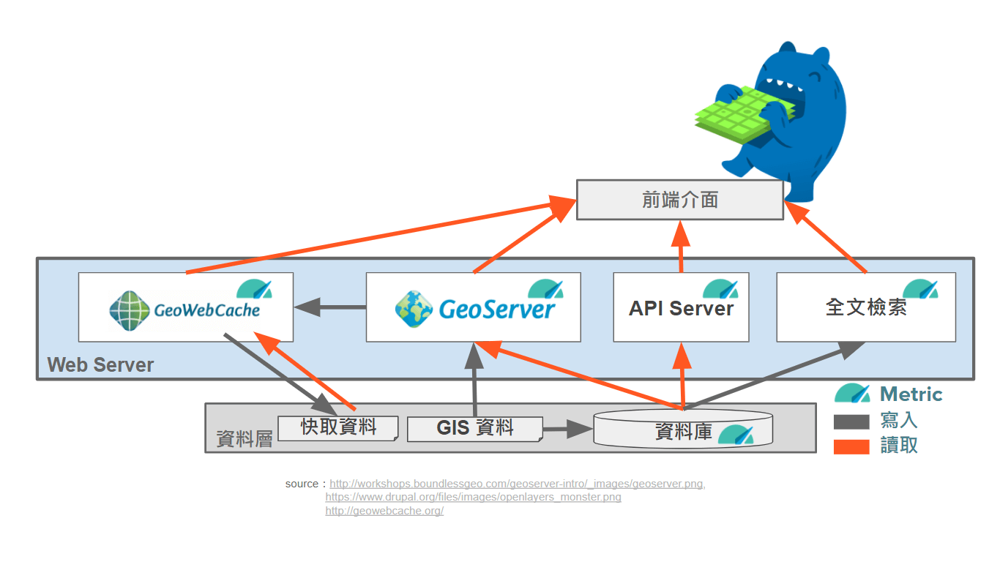
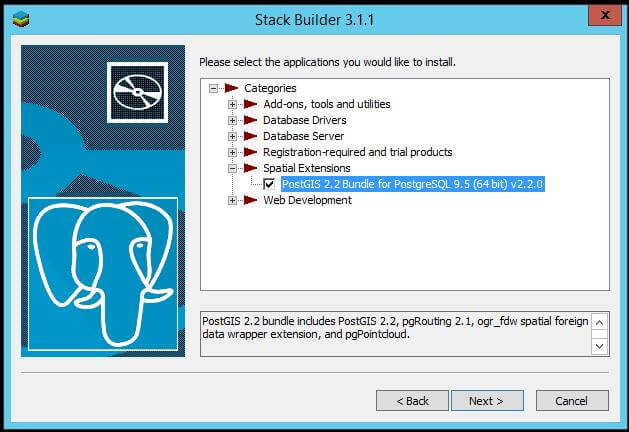
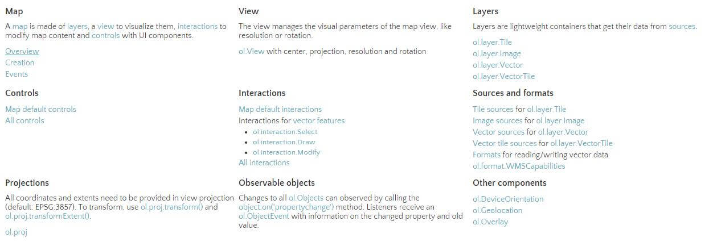

這篇文章會帶大家開箱如何把地理資訊視覺化?
- 地理資訊系統架構
- 地圖函式庫 (Openlayer)
- 地理資訊系統名詞
- 地理投影方式
- GeoJSON
- 前端常見的圖表工具
地理資訊系統架構

- PostGIS/PostgreSQL: 資料庫
- GeoServer: 提供 Web Severvice
- GeoWebCache: 圖磚快取
- OpenLayers.js、Leaflet.js: 前端網頁操作
雖然資源很多，整合最好的還是 PostGIS/PostgreSQL 套裝，但第一次看到這隻呆肥的大象，除了知道大象鼻子可以頂球，其他好像蠻沒方向的。
http://postgis.net/windows_downloads/

其實裝完 PostgreSQL 之後就有內建安裝 PostGIS 套件的工具，因為 PostgreSQL 其實只是一般的資料庫而已，需要加上能收發地理資訊的外掛也就是 PostGIS，裝完之後，絕對會發現不能馬上用，查了一下官方的文件後會發現以下說明，就是說你都要自己 DIY 加的意思，相關就列在下面，蠻多功能還沒去試的，SELECT postgis_full_version(); 可以看到底裝了什麼，最後再裝 GeoServer 然後簡單設定一下跟我們剛剛裝的資料庫結合，基本上後端就搞定了。
1 | Please note the PostGIS windows installer, no longer creates a template database. Using CREATE EXTENSION postgis; for enabling PostGIS in a database is the recommended way. |
首先資料庫是需要能夠存地理資訊的來源，再來就是也可以提供其他形式的地理資訊來源，Geoserver 最重要的工作其實也就是這樣，把地理資訊吃進來，處理後吐出各種地理資訊，前端其實只是單純的配合配置，然後有點小技巧操弄一下，一個簡單的地圖就完成了。
地圖函式庫 (Openlayer)

source : https://openlayers.org/en/latest/apidoc/
除了 Openlayers 3 外還有像是 leaflet 、d3 protovis 、 polymaps 、modest maps 、 Cesium (3D globes and maps) 等等可以去看看，根據上圖的 API 可以看出來 Map 是由 Layer 構成的 View 是用來讓 Layer 出現，其他就是一些額外功能和配置了，最少會需要了解下面幾項。
1 | ol.map; |
簡單範例如下，請一定要相信我只打下面這樣一定不能 Work，配置完之後還要有 target，就是看最後需要映射到哪個 <div> 上面，要有 view，讓他以正確的投影呈現。
1 | var map = new ol.Map({ |
地理資訊系統名詞
- GML (Geography Markup Language): XML 地理圖形標記語言，包括空間特徵和屬性。
- KML (Keyhole Markup Language): 圖形幾何特徵規格，Google Earth 使用之 KML 格式，被 OGC 採納為實作標準之一。
- WCS (Web Coverage Service Specification): 網路網格資料服務規格，HTTP 介面，取得特定的網格式影像資料。
- WMS (Web Map Service Specification): 網路地圖服務規格，HTTP 介面，取得地圖影像，如 JPG、GIF 與 PNG。
- WFS (Web Feature Service Specification): 網路圖徵服務規格，HTTP 介面，取得向量式的地理圖徵資料，可進行資料編修目前採用的資料格式為 GML。
- WPS (Web Processing Service Specification): 網路處理服務規格，透過該標準使用者可以將地理資料處理工作交付給伺服器端來處理。
地理投影方式
因為地球是圓的，但不是很圓，當圓的東西畫在平面上就需要投影，台灣地圖常見的坐標分別是 TWD67、TWD97 和 WGS84，其中 WGS84 就是常見的 GPS (lat, lon) 系統， 以下為台灣本島常用的 EPSG (European Petroleum Survey Group) 代碼:
- EPSG 3857(900913): 使用於各種網路地圖上，由 Mercator 投影而來適合用於平面地圖，如 Google map,OSM,等等皆預設採用
- EPSG 4326(WGS 84): 經緯度系統，經常出現在氣候的定位適合用於球形地圖
- EPSG:3826(TWD97): TM2 (二度分帶，中央經線 121 度)(適用臺灣本島，目前政府使用)
- EPSG:3828(TWD67): TM2 (二度分帶，中央經線 121 度)(適用臺灣本島，早期政府使用)
註一：N 度分帶，把球面切成 N 片最後拼起來，變形程度 N 越大則越小
註二: 代碼就是個小團體訂了小團體規則，最後變成大團體的各種規則
GeoJSON
GeoJSON 也是常用的資料格式，首先推薦一個網站 geojson.io ，看名字就知道是做 geojson 的 IO (被打 XD) ，那啥是 GeoJSON 呢？Geo 是形容詞？JSON 是 JavaScript Object Notation，是一種常用的傳輸資料格式，就算是加上 Geo 他其實還是 JSON 不過就是裡頭會有固定的格式罷了 XDDD
GeoJSON 在我看來最主要的用途在於 Infographic 也就是資訊視覺化(硬要烙英文 XDDD)，因為轉成 JSON 檔後在前端操弄上真的還蠻有幫助的，可以很方便地去做基本的邏輯判斷及顯示，封面圖那段 code 主要是透過 PostGIS 去取得 DB 中的資料並轉成 GeoJSON ，簡單來說就是透過 PostGIS 內建的函式 ST_AsGeoJSON 幫忙，來組成我們想要的 JSON 檔，然後 SQL 寫得稍微複雜一點點而已 XD
http://geojson.io/#map=2/20.0/0.0
前端常見的圖表工具
目前常見的有以下三種:
- Chart.js
- D3.js
- C3.js
當然是從最熱門的 D3 開始看 XDDD 初步的感覺是，D3 適合較進階的使用者使用，網路上一句解釋說的不錯 :
D3.js 的基礎不是在視覺化，而是資料與物件的結合
D3 將資料對應到 dom 上，再透過方便的介面來詳細的定義各式需要的效果，文件要閱讀會需要一定的基礎知識，隨意舉一個 Voronoi Diagram，另外還有像是 topojson 這個蠻常在範例中看到個格式，可能都是很多人沒聽過的名詞 Orz
相對於困難的 D3，C3 和 Chart.js 就相對親民許多，C3 較 D3 容易這是當然的，畢竟 C3 就是以 D3 為基礎並簡化寫法的 Library，C3 和 Chart.js 兩者都是出圖表的函式庫，像是常見的 Line chart, Bar chart, Pie chart 等，Chart 在 Github 星星頗多，搭配基本客製化的配置檔其實基礎操作也夠用了，兩者使用起來的方法也差異不大~
資訊視覺化相關的呈現，除了統計圖表外，還有地理資訊在地圖上的顯示方式，地圖視覺化方式大概是熱點圖、群聚圖、航線、圖層上色後疊合，其中有看到幾個比較有趣的應用：竊盜、重度急診即時訊息、環境儀錶板(pm 2.5)、一定要推一下的制服(X)正妹(O)地圖、或是簡單的麥當當距離圖~
喜歡這篇文章，請幫忙拍拍手喔 🤣